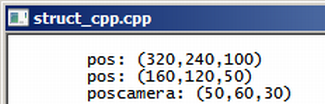

Curso completo de linguagem C++
Gameprog - Escola de programação de jogos digitais
Contato: gameprog.br@gmail.com
track08.html
08. Struct
8.1 Struct cm c++

// struct_cpp.cpp
// ilustra que as estruturas em c++ podem ter métodos e propriedades
#include <iostream>
#include <string>
using namespace std;
// protótipo de nossas funções básicas
void inicio();
void fim();
// definindo uma estrutura ponto
struct PONTO3D
{
float x;
float y;
float z;
void show(char *txt)
{
cout << "\t" << txt << "(" << x << "," << y << "," << z << ")\n";
}
void metade();
};
// ponto de entrada de execução do programa
int main() {
inicio();
PONTO3D pos;
PONTO3D poscamera = { 50,60,30 };
pos.x = 320;
pos.y = 240;
pos.z = 100;
pos.show("pos: ");
pos.metade();
pos.show("pos: ");
poscamera.show("poscamera: ");
fim();
} // endmain
void PONTO3D::metade() {
x = x / 2.0f;
y = y / 2.0f;
z = z / 2.0f;
} // endmethod
//************* funções ******************************************************
void inicio() {
system("color f0");
system("title struct_cpp.cpp");
cout << "\n";
} // endfunction: initsys()
void fim() {
cout << "\n"; system("pause");
} // endfunction: endsys()
Nas estruturas definidas em c++ vc pode adicionar propriedades e métodos
semelhante a como vc faz numa classe. Na estrutura propriedades e métodos
são public por default enquanto na classe eles são private na omissão
dessa especificação.
Bem, em nossa opinião esse novo estilo de estrutura com métodos e
propriedades não é bem vindo. Se tivermos que usar uma estrutura
assim então é melhor utilizar uma classe para melhor clareza, leitura
e compreensão do programa.
Aproveitando nossa conversa sobre estilo ruim, declaramos nossa função main()
como int main() e não retornamos ao sistema o inteiro que deveríamos.
Procedemos assim porque nossos programas são testes rápidos para ilustrar os
recursos da linguagem c++. Em programas profissionais, procure retornar valores
inteiros significativos a vc e ao sistema.
PONTO3D poscamera = { 50,60,30 };
A linha acima representa uma forma prática de inicializar uma estrutura.